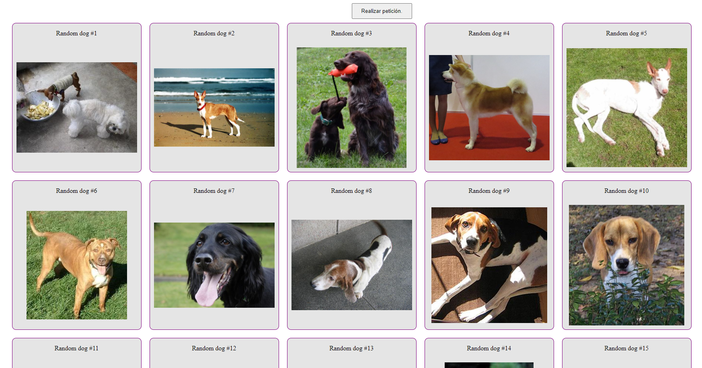
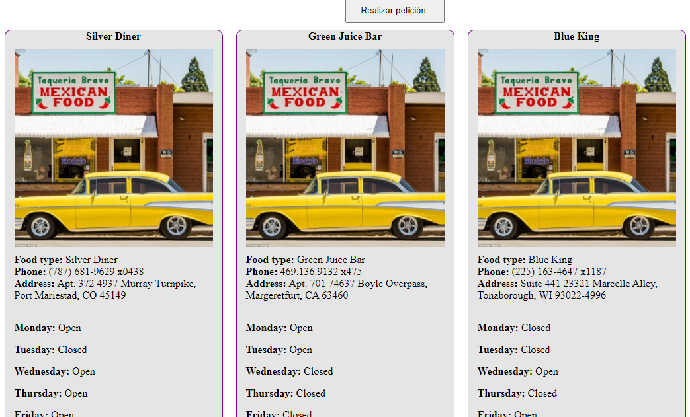
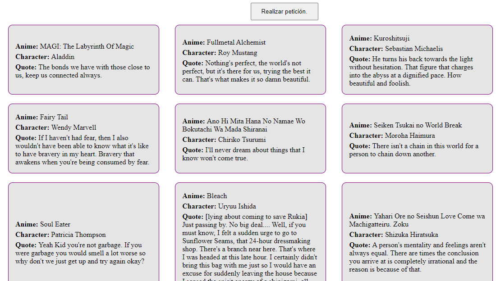

Se debe de realizar una petición usando fetch y crear una sección de elementos iguales (cartas) basado en la respuesta de la API
- Actualizar repositorio
-
Realizar una petición http (fetch) a una delas siguientes API en
index.js
- https://dog.ceo/api/breeds/image/random/10
- https://animechan.vercel.app/api/quotes
- https://random-data-api.com/api/restaurant/random_restaurant?size=10
- Generar un listado de elementos html con la respuesta de una de esas API
- Modificar los estilos CSS en index.css
- Subir el parcial a la rama
- Crear un PR en github
Ejemplos


